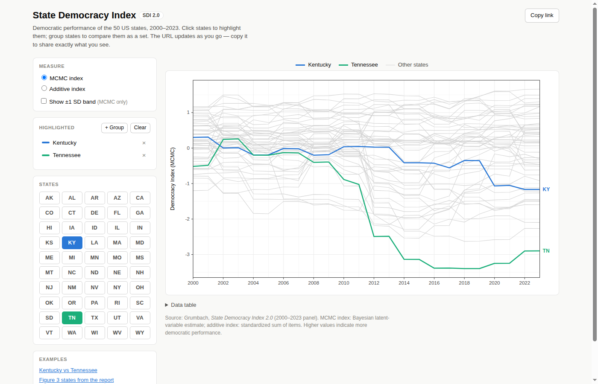

Before the prompt
The idea surfaced on May 11, 2026, in an unrelated session: “I want to make a repo that makes nicer frontend charts for this: democracypolicylab.berkeley.edu/state-democracy-index. Give me some repo name suggestions? sdix?” The name stuck.
On July 4, 2026 the repo was set up by hand: git init, a remote, and three CSVs from the
Democracy Policy Lab dropped into the root, along with the report PDF. Two screenshots of the report's figures sat
alongside them as a visual reference: the by-state trends figure, saved the day before, and the party-control figure,
saved six minutes before the prompt.
| File | Contents |
|---|---|
SDI_2.0.csv | 50 states × 24 years (2000–2023): MCMC index, its SD and SE, and the additive index |
SDI_2.0_item_data.csv | The underlying policy items per state-year |
variables_list.csv | Item codebook |
The prompt
I want to build a static client-Javascript website, deployable to GitHub Pages, that allows users to plot states, individual or grouped.
Ideally, the query string would encode state information and make it easier for people to share. (Example use case: plotting Kentucky against Tennessee with the remaining states in grey in the background)
The existing plots have been extracted (i.e. screenshot) from the SDI 2.0 paper and have been independently confirmed to have been made by ggplot2 using theme_bw.
Raw data are in the CSVs.
That is the whole specification. Four requirements are in it: static and client-side, deployable to GitHub Pages,
individual or grouped states, and a shareable query string. One example use case. One styling constraint, with
the reasoning attached: the paper's figures are ggplot2 theme_bw, so the site should look like they do.
No file layout, no library preference, no mention of a data pipeline. And no example: no mockup, no reference
page, no sketch of the UI. Zero-shot, in the prompting sense. The only behaviour spelled out is the query string.
One prompt, one commit
Twenty-five minutes after the prompt, the first commit landed. Nine files, 3,434 lines, of which about 2,400 are the CSVs themselves.
ab57606 Add SDI 2.0 explorer static site and source data Static, dependency-free site (vanilla HTML/CSS/JS + SVG) for plotting State Democracy Index 2.0 trends, 2000-2023. States can be highlighted individually or as named groups (members share a color, bold mean line); the full view is encoded in the query string for sharing, e.g. ?s=KY&s=TN. Chart styling replicates ggplot2 theme_bw to match the paper's figures. site/data.js is generated from SDI_2.0.csv by site/build_data.py.
| File | Lines | Role |
|---|---|---|
site/app.js | 625 | State model, URL codec, SVG chart renderer, hover layer, data table |
site/style.css | 146 | Page chrome plus the theme_bw color tokens |
site/index.html | 80 | Page shell and controls |
site/README.md | 61 | Features, URL scheme, two GitHub Pages deploy options |
site/build_data.py | 51 | Bakes the CSV into data.js, standard library only |
site/data.js | 2 | Generated data, one JSON literal on window.SDI |

?s=KY&s=TN, the example use case from the prompt.Decisions that were made without being asked for
- Loading the dataviz skill first. Before writing anything, Claude asked to load Claude Code's bundled dataviz skill and worked from it. The series palette and the page's ink and surface tokens are that skill's, and its procedure accounts for most of the unasked-for features below: a hover crosshair and tooltip, a legend plus direct labels, a table view, color slots that never repaint, and a hard cap of eight series.
- No dependencies at all. No charting library, no bundler, no framework. The chart is hand-built SVG. “Static, client-JS, GitHub Pages” was read as “nothing to install and nothing to build”, which is still the project's standing rule.
- Data baked in, not fetched. A small Python script turns the CSV into
data.js, so the page works fromfile://and needs no fetch, no CORS, no server. - A series model with fixed palette slots. A “series” is one state or a named group. Each series owns a palette slot for its lifetime, so adding or removing one never recolors the others.
- The URL codec.
?s=KY&s=TNfor states;?s=Deep%20South:AL,GA,LA,MS,SCfor a named group;m=additiveandband=1for the measure and the SD band. Written withhistory.replaceStateon every change, so the address bar is always the share link. theme_bwas named tokens. Panel border grey20, major grid grey92 with thinner minor lines, axis text grey30, white panel, ticks outside. The page chrome around it was deliberately kept quiet so the panel reads as the artifact.- Things the prompt never mentioned. A group mean drawn as a bold line, a ±1 SD band using the MCMC uncertainty column, direct labels at the right edge with overlap resolution, a hover crosshair with per-year values, a collapsible data table, clickable grey background lines, and a Copy link button.
- Reading the screenshot. One of the three example links plots California, North Carolina, Tennessee, Michigan, and Washington, the five states highlighted in the trends screenshot. Nothing in the prompt names them. The screenshot has no caption, so the link called it Figure 3; the report calls it Figure 5, corrected a week later.
What is and is not on record
Claude Code keeps session transcripts for a limited time, and the transcript of this session had been pruned by the time this page was written. The prompt text, its timestamp, and the follow-up messages survive in the prompt history; the code survives in git. The turn-by-turn between 18:25 and 18:50 is not recoverable from disk. The dataviz skill load at the start is known from the palette it left behind and from memory.
The rest of the evening
Everything after the first commit was iteration in the same session. The commit log for July 4 (times PT):
- Add SDI 2.0 explorer static site and source data
- Move build script and README to repo root
- Credit Democracy Policy Lab as data source
- Use pathlib in build_data.py (“It's 2026”)
- Rename site/ to docs/ for native GitHub Pages branch deploy (a symlink was tried first; Pages forbids them)
- Link the SDI 2.0 report PDF from the README intro
- jyouyang.github.io/sdix is live, after three failed Pages builds during a GitHub-wide outage
- Move Measure controls to the bottom of the sidebar
- Show chart above controls on narrow screens
- Link the report PDF from the site's source line
- Add live-site link, social preview metadata, and favicon
- Make the chart SVG standalone-safe (groundwork for Copy image)
- Add “Hide unselected states” toggle
- Put Hide-unselected first in the Measure block; add CA vs NY example
- Put the States grid above the Highlighted list
What followed
The next ten days were shorter sessions, each one strand. Four of them changed what the site is. The full log is on GitHub.
Image export, July 4 to 6
The evening of the first commit ended with a long conversation about a Copy image button, and the first step landed that night: every rendering-critical property moved out of the stylesheet and into inline SVG attributes, so a chart serialized out of the page still renders on its own. Two days later the renderer was parameterized to draw a second, offscreen version of the chart at a fixed size with its own title, legend, and source caption, rasterized at twice that size. The clipboard path is tried first, constructed synchronously in the click handler because Safari insists, with a file download as the fallback. A Download PNG button followed on July 11. A hook for a build-time social preview image was exposed in the same commit and never used.
Annotations, July 5
The only hand-written content on the site. A curated file marks state-year events, drawn as dots on highlighted lines with the note in the tooltip, behind a Show annotations toggle. A reserved US key marks nationwide events instead, as dashed rules across the whole panel that show even with nothing highlighted; it was seeded with Crawford in 2008, Shelby County in 2013, and Rucho in 2019. State entries came in over the following day for North Carolina, Tennessee, Florida, Georgia, Ohio, Iowa, and Oregon. This is the point where the explorer stopped being only a plotter.
The verify skill, July 11
Every session that wanted to see the page had re-derived the same headless-Chrome recipe from scratch. In the middle
of the Download PNG work, that became a project skill: Playwright through uv run with inline
dependencies against the system Chrome, plus the handles for driving the app, such as URL parameters for initial
state, download capture, clipboard permissions, and synthetic hover. A raw Chrome screenshot one-liner was kept as the
fast path, and the timing that justified keeping both is recorded in the skill. The prompts that shaped it survive;
the session transcript does not.
The additive index, July 14
The source note had described the additive index loosely. The correction, to a standardized, equal-weighted sum of the items, was checked two ways: against the replication code, and by reproducing the published index from the item data to machine precision. It is the one commit where the analysis work running alongside the site, none of it in this repository, fed back into what the page says.
About this page
Written on September 17, 2026, in one Claude Code session with Claude Fable 5.1, from four sources: the prompt history Claude Code keeps outside the transcripts, which holds every message James sent and when; the git log, mostly the commit bodies rather than the subjects; the first commit itself, checked out into a temporary worktree and rendered with headless Chrome for the screenshot above; and the two figure screenshots still sitting untracked in the repository root, whose timestamps place them relative to the prompt. The skill attribution was first written from memory as a design skill, then corrected when the first commit's palette turned out to match the bundled dataviz skill's reference file digit for digit. The transcript retention that let the original session lapse has since been raised, so the session that wrote this page will still exist when the next one edits it.
Data: Democracy Policy Lab, UC Berkeley, State Democracy Index 2.0. Site built with Claude Code; commits are co-authored accordingly.